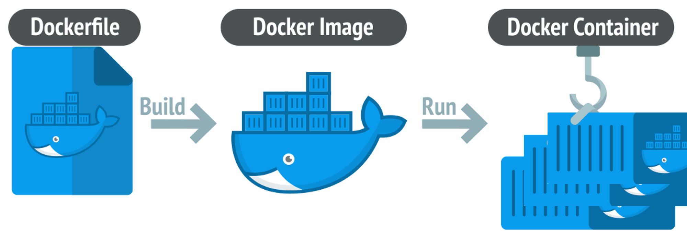
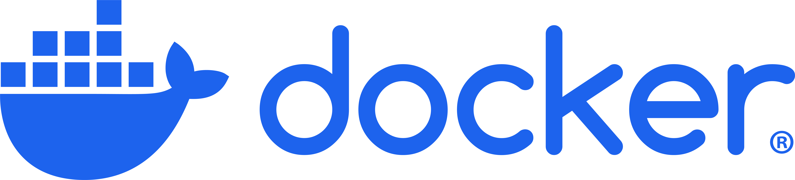
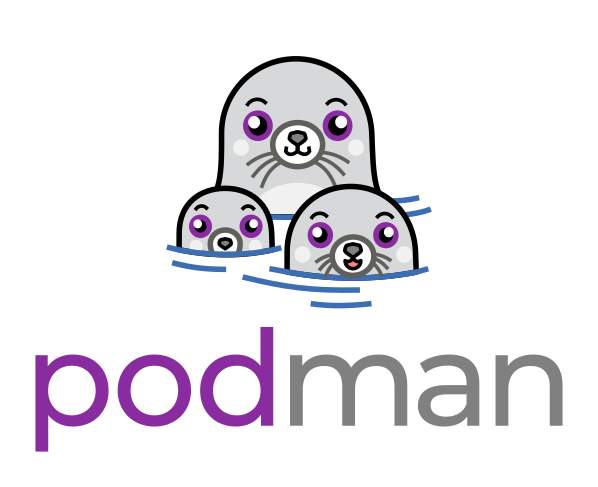
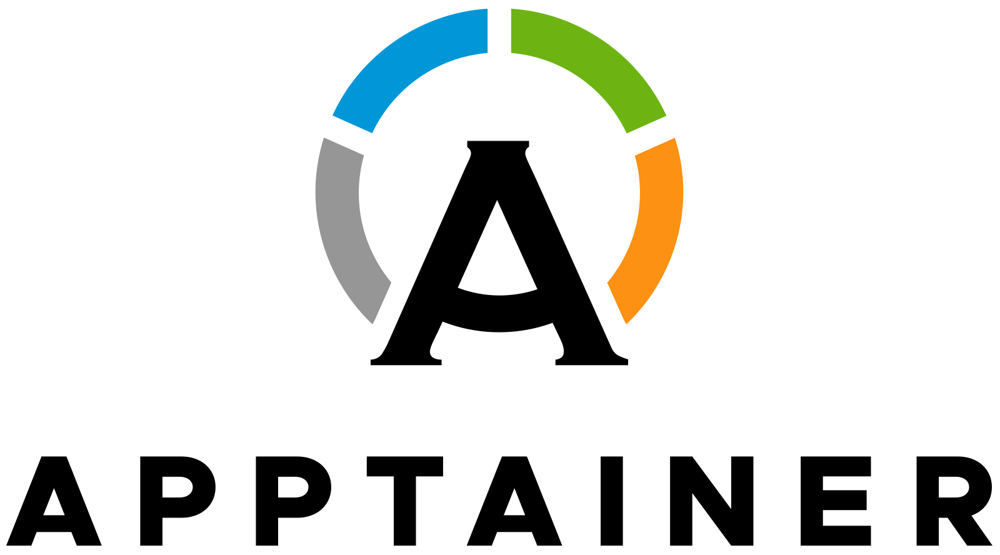
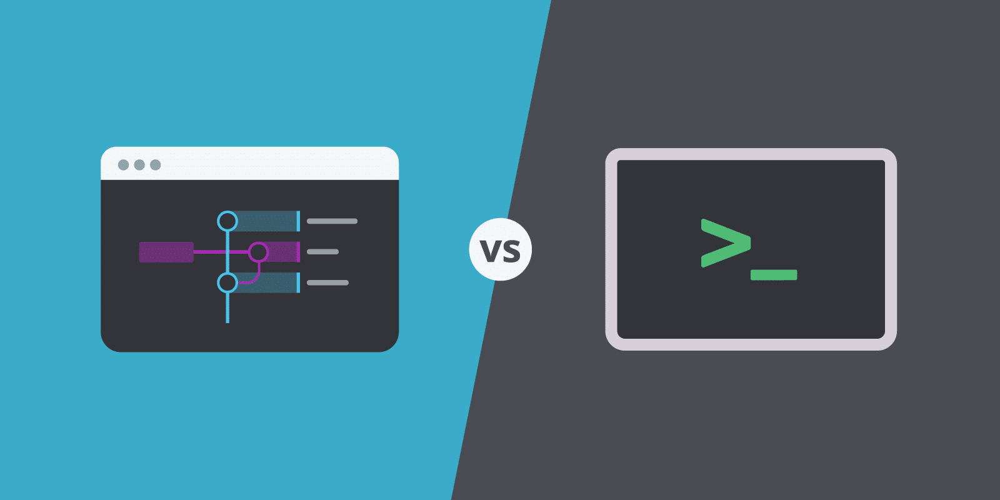
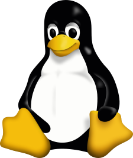
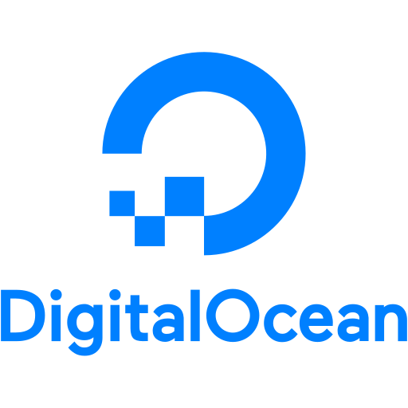

TL;DR: Containers provide reproducible, secure, and portable environments for data scientists and statistical programmers. While tools like renv for R and requirements.txt for Python lock dependencies at the package level, containers go beyond this by bundling programming languages, system libraries, and operating system dependencies into a single, isolated runtime. Tools like Docker and Podman streamline setup, ensuring consistent environments across local machines, cloud servers, and CI/CD pipelines. Features like container layering and caching make builds efficient, while orchestration platforms like Kubernetes scale these environments for production. Containers eliminate the “works on my machine” problem, empowering you to produce reliable, credible, and easily shared data science workflows.
Access a playground for playing with containers using GitHub codespaces.Deploying r shiny rdevdash app to Digital Ocean by using Docker Hub app image.
Motivation
Containers have become an essential tool for modern development and data science workflows, addressing many common frustrations associated with dependency conflicts, environment setup, and reproducibility. If you’ve ever struggled with inconsistencies between development and production environments or had to debug a project that mysteriously broke after a package update, containers offer a practical solution. They encapsulate your code, dependencies, and configurations into a portable and consistent runtime environment, ensuring your work runs the same way everywhere. Whether you’re a developer deploying applications, a data scientist ensuring reproducibility, or a team onboarding new members, containers simplify and streamline the process.
As data scientists and statistical programmers, we rely on reproducible and transparent workflows. We have all encountered familiar pain points: a project that works perfectly on your machine but fails on a colleague’s system or the struggle to maintain multiple versions of R, Python, or system libraries for different projects. These challenges do not just affect convenience; they directly impact the credibility and reliability of our analyses. Containers address these issues by providing isolated, portable, and secure environments that capture every dependency needed to run your project successfully.
Key Advantages of Containers
Example Use Cases
renv.lock to reproduce an old environment, ensuring your previously working code runs seamlessly on modern systems.
What Are Dockerfile, Image and Container

A container is a lightweight, portable runtime environment that encapsulates code, runtimes, tools, libraries, and configurations to ensure that your application or analysis behaves consistently, regardless of where it is deployed. Containers rely on an underlying image, a read-only, immutable template that defines the container’s environment, including the operating system, system libraries, dependencies, and application code. To create an image, a developer writes a Dockerfile (or Containerfile), a text file containing step-by-step instructions to build the environment. The Dockerfile specifies the base image, dependencies to install, environment variables, and commands to run when the container starts. Once the Dockerfile is processed, the image is a blueprint for creating ONE or MANY containers.
A Dockerfile (or Containerfile) is a text file that contains step-by-step instructions for building a container image. It specifies the base image, dependencies, environment configurations, and commands to set up the container. Think of the Dockerfile as the recipe for creating an image.
For example, a Dockerfile for a Python application might look like this:
FROM python:3.10-slim
RUN pip install pandas numpy matplotlib
COPY . /app
CMD ["python", "/app/main.py"]
This file ensures that any container built from this Dockerfile will have Python 3.10, the required libraries, and the application ready to execute.
An image is a read-only, immutable template created by executing the instructions in a Dockerfile. It includes the base operating system, application code, system libraries, and any tools or configurations needed. An image acts as the blueprint for containers, allowing you to create consistent environments.
For example, an image built from the above Dockerfile will contain:
- The Python 3.10 runtime
- Pre-installed Python libraries like pandas, numpy, and matplotlib
- Your application files copied into the image
Images are portable and can be shared via container registries like Docker Hub, Quay, or private registries. Once built, an image ensures that any container created from it will have the same environment, eliminating inconsistencies across machines.
A container is a running instance of an image. When you start a container, the runtime creates an isolated environment based on the image. This environment is consistent across different machines, ensuring reproducibility.
Containers are lightweight and efficient because they share the host operating system's kernel rather than emulating an entire OS. While multiple containers can be launched from the same image, they operate independently and maintain their temporary state, such as logs or intermediate outputs.
For example:
- Launching a container:
docker run -it my_image - Inspecting a running container:
docker exec -itbash
Containers are ideal for running applications in isolated, consistent environments. When stopped, a container can be restarted or removed without affecting the underlying image, ensuring repeatability and flexibility.
Roles in the Container Ecosystem
Roles can be broadly categorized in the container ecosystem based on how individuals or teams interact with containerized applications and images. These roles help clarify the distinct ways containers are used, extended, and built, aligning with different levels of expertise and objectives. The primary roles are consumer, developer-consumer, and developer.
- Running or using the application’s features
- Providing feedback or reporting issues to the team that created the container
- Start with a base image (e.g.,
python:3.10,rocker/tidyverse) - Add new layers: installing libraries, scripts, or configurations to customize the environment
- Write or modify Dockerfiles for tailored use cases
- Often handle minor updates or bug fixes while relying on a solid base created by a full-fledged developer
- Create base images and configure operating systems, dependencies, and tools from scratch
- Optimize containers for performance, security, and minimal resource usage
- Set up CI/CD pipelines and handle deployments to production environments (e.g., Kubernetes, AWS ECS)
- Ensure compliance with organization-wide standards and best practices
These roles represent a spectrum of container interaction, from straightforward application use to advanced image creation and deployment. Understanding these distinctions helps clarify responsibilities in collaborative projects, ensuring the right person handles tasks like deploying containerized apps to production or maintaining base images. Each role plays a critical part in the ecosystem, whether simply running containers, building on existing images, or creating and deploying them from the ground up.
Beyond Docker: Tools Like Podman and Apptainer
When people think of containers, Docker is often the first tool that comes to mind. However, it is important to recognize that containers are not tied to any single vendor. While Docker popularized containerization, you can now choose from several alternatives:



Common Use Cases:
- Developing and testing microservices-based applications.
- Building CI/CD pipelines with tools like Jenkins or GitHub Actions.
- Running pre-built containers from Docker Hub for quick prototyping.
- Daemon-based architecture for container management.
- Integration with Docker Compose for multi-container orchestration.
- Native support for Windows, macOS, and Linux.
Common Use Cases:
- Rootless container deployments for enhanced security.
- Environments where daemonless container management is required.
- Integrating with Kubernetes as a container runtime.
- Daemonless architecture for secure container operations.
- Full compatibility with Open Container Initiative (OCI) standards.
- Supports building, running, and managing containers without elevated privileges.
Common Use Cases:
- Running scientific simulations or data analysis pipelines.
- Deploying containers on HPC systems with schedulers like SLURM.
- Ensuring reproducibility in research workflows.
- Daemonless container management with direct execution.
- Single-file image format (`.sif`) for portability and consistency.
- Seamless integration with HPC schedulers and environments.
This diversity means you can pick the container technology that best fits your requirements. Docker remains a strong choice for general-purpose containerization and production-grade deployments. Podman excels in secure, rootless setups, and Apptainer is perfect for scientific workflows and HPC environments. Regardless of the tool, the core benefits of containerization—reproducibility, portability, and efficiency—remain the same.
CLI vs. Desktop

Managing containers can be done through terminal-based (CLI) or desktop (GUI) applications, each catering to different user needs and scenarios. CLI tools like Docker and Podman offer powerful, scriptable solutions that are ideal for advanced users and automation, while GUI-based tools like Docker Desktop and Podman Desktop simplify operations for beginners or those who prefer visual interfaces. For enterprises, licensing considerations, particularly with Docker Desktop, make alternatives like Podman an attractive option. Here’s a comparison to help you choose the right approach:
| Feature | Terminal (CLI) | Desktop Applications (GUI) |
|---|---|---|
| Ease of Use | Requires familiarity with commands and syntax; steeper learning curve. | Beginner-friendly with intuitive interfaces. |
| Automation | Ideal for scripting and integrating into CI/CD pipelines. | Limited automation; manual interactions needed. |
| Resource Usage | Lightweight; no additional system overhead. | Resource-intensive; requires GUI processing. |
| Monitoring and Logs | Requires command-line tools or external monitoring solutions. | Provides visual dashboards and insights. |
| Cost for Enterprises | Free (open source or included with tools). | Docker Desktop has licensing fees for larger organizations. |
| Security | Flexible configurations; supports rootless setups (e.g., Podman). | Typically less control over granular security settings. |
| Best Use Case | Advanced users, remote servers, and automation. | Local development, beginners, and visual monitoring. |
Choose terminal-based tools if you prioritize automation, flexibility, and lightweight operations. Opt for desktop applications if ease of use and visual insights are your focus.
CLI Commands: Managing Containers
Once you have set up a containerization tool like Docker, Podman, or Apptainer on your machine, becoming familiar with the core commands is essential. While Docker is the most widely recognized tool, Docker and Podman share identical commands, making it easy to switch between them. Apptainer, on the other hand, uses a slightly different command set due to its focus on scientific workloads and lightweight execution. Below is a generalized list of commands, primarily applicable to Docker and Podman but conceptually relevant for Apptainer.
| Command | Description | Generalized Example |
|---|---|---|
run |
Runs a container from an image. Use -p to map host ports to container ports (Docker/Podman). |
run -p 80:80 nginx |
ps |
Lists all currently running containers. | ps |
stop |
Stops a running container. | stop <container_id> |
rm |
Removes a stopped container. | rm <container_id> |
images |
Lists all images available on the host machine. | images |
rmi |
Removes an image by its ID. | rmi <image_id> |
build |
Builds an image from a Containerfile or Dockerfile. Use -t to name the image. |
build -t my_image . |
exec |
Runs a command inside a running container. Use -it for interactive mode. |
exec -it <container_id> /bin/bash |
pull |
Downloads an image from a container registry (e.g., Docker Hub, Quay, or Apptainer’s sources). | pull nginx |
push |
Uploads an image to a container registry. | push <image_name> |
# Display help information for Docker (lists available commands and usage details)
docker --help
# List all Docker images currently available on your local system
docker images
# Display help information specifically for the 'docker images' command,
# including options and usage details for listing images
docker images --help
# Pull the v0.2 version of the Docker image 'polkas/rdevdash-app' from a registry (e.g., Docker Hub)
docker pull polkas/rdevdash-app:v0.2
# List Docker images again to confirm that the new image has been downloaded to your system
docker images
# Run a container from the 'polkas/rdevdash-app:v0.2' image, mapping port 3838 on your host machine to port 3838 in the container.
# This allows you to access services running inside the container via the host's IP on port 3838.
docker run -p 3838:3838 polkas/rdevdash-app:v0.2
# List all currently running containers to verify that the container has started
docker ps
# Stop all containers:
# 'docker ps -a -q' fetches the IDs of all containers (running or stopped),
# and 'docker stop' stops them. This is a quick way to stop all running containers.
docker stop $(docker ps -a -q)Docker and Podman share nearly identical commands, making it easy to switch between the two tools. For instance, docker run works the same as podman run, and both are well-suited for managing containerized applications and services. These tools support features like advanced networking, port mapping, and lifecycle management, allowing users to handle complex workflows effectively. This consistency in command structure makes Podman a natural alternative for users already familiar with Docker.
Apptainer, on the other hand, is designed with a focus on executing single tasks or applications, rather than managing long-running services. Its command set includes options like exec for running commands or applications inside containers, but it lacks Docker and Podman’s built-in support for port mapping or advanced networking features. Additionally, Apptainer uses a different approach to building images; instead of the build command for creating layered images, Apptainer converts existing container formats (e.g., Docker images) into its .sif format for portability and reproducibility. Despite these differences, mastering the core commands across these tools equips users to manage containers effectively in various environments.
Ports
For containers, ports connect containerized applications to the outside world. Containers are isolated environments with their own networking stack, and any service running inside a container listens on specific ports within that isolated space. To make these services accessible to the host machine or external clients, Docker allows port mapping.
When you run a container, you can map a port on the host machine to a port inside the container. For instance, if a web server inside a container listens on port 80, you can map it to port 8080 on the host machine. This is achieved using the -p option with the docker run command:
#-p [HOST_PORT]:[CONTAINER_PORT]
docker run -p 8080:80 nginxIn this example, requests sent to http://localhost:8080 on the host will be forwarded to the container’s port 80, where the Nginx server is running. Port mappings provide flexibility by allowing containers to use the same internal ports while avoiding conflicts with the host.
0.0.0.0 is a special IP address that instructs a service to listen on all available network interfaces of the host machine, allowing it to accept connections from any source. Binding a service to 0.0.0.0 makes it accessible from any network the host is connected to, including external networks, which can increase both flexibility and potential security risks.
Popular services and their default ports:
Default Port: 8888
Jupyter Notebook is a web-based interactive computing platform that allows you to create and share documents containing live code, equations, visualizations, and narrative text.
Default Port: 8787
RStudio Server provides a browser-based interface to R, enabling you to run R scripts, manage projects, and visualize data without installing R locally.
- MySQL: 3306
- PostgreSQL: 5432
- MongoDB: 27017
Various database systems use specific ports to handle client connections and data transactions.
Common Port: 5000 (for Flask apps)
APIs developed using frameworks like Flask typically listen on specific ports to handle HTTP requests and serve data to clients.
For projects with multiple containers, tools like Docker Compose simplify port management. In a docker-compose.yml file, you can define port mappings under the ports key:
services:
web:
image: nginx
ports:
- "8080:80"Additionally, the EXPOSE directive in a Dockerfile documents the ports that the container listens on, though it does not publish or map these ports by itself. For dynamic scenarios, the -P flag can map all exposed ports in a container to random high-numbered ports on the host.
By leveraging port mapping, Docker ensures isolated containers can interact with external systems seamlessly while maintaining flexibility and avoiding port conflicts.
Publishing container ports is insecure by default. Meaning, when you publish a container’s ports it becomes available not only to the Docker host, but to the outside world as well. If you want to make a container accessible to other containers, it isn’t necessary to publish the container’s ports. You can enable inter-container communication by connecting the containers to the same network, usually a bridge network.
Running on Different Machines
Containers like Docker, Podman, and Apptainer rely heavily on Linux kernel features, directly influencing how they operate on different machine types. All three tools are natively compatible on Linux machines, as the Linux kernel provides essential containerization features like namespaces and groups. Docker uses a centralized daemon (dockerd) to manage containers, offering robust networking and lifecycle management but requiring elevated privileges unless running in rootless mode. Podman, designed to be daemonless, manages containers as user processes while maintaining strong isolation and offering a secure, rootless experience. Apptainer, in contrast, runs containers as lightweight processes directly within the user’s namespace, prioritizing ease of integration with the host environment over isolation. This approach makes Apptainer particularly well-suited for HPC and scientific computing environments where reproducibility and host integration are critical.

Docker:
- Uses a centralized daemon (
dockerd) to manage containers. - Offers robust networking, volume management, and container lifecycle features.
- Requires elevated privileges unless running in rootless mode.
- Daemonless architecture that manages containers as user processes.
- Provides strong isolation and supports secure, rootless container operations.
- Runs containers as lightweight processes within the user's namespace.
- Prioritizes integration with the host environment over isolation.
- Ideal for HPC and scientific computing where reproducibility and host integration are critical.
Docker Desktop:
- Includes a lightweight Linux VM to support container features.
- Seamlessly integrates with macOS, providing a user-friendly experience.
- Bundles a Linux VM to enable container operations.
- Maintains the same daemonless and rootless architecture as on Linux.
- Does not include a built-in VM, requiring users to set up their own Linux environment.
- Less convenient compared to Docker and Podman but feasible for advanced users.
Docker Desktop:
- Includes a lightweight Linux VM to enable container functionality.
- Provides seamless integration with Windows environments.
- Uses a Linux VM to support container operations while maintaining daemonless architecture.
- Offers rootless container management on Windows through the VM.
- Requires a manually configured Linux environment, as it lacks a built-in VM.
- Less convenient on Windows but viable for specific reproducibility-focused workflows.
Lockfiles and Dependency Managers
Pinning versions in lock files is essential for reproducibility during image BUILDS, as Python/R libraries frequently update. Pinning is less common for apt since system libraries are more stable, but explicit version pinning or snapshot repositories should be used to ensure consistent results during image REBUILDS over time. Please remember that once an image is built, it will always result in the same container runtime environment. We want to use lock files to stabilize the image BUILDS.
Lockfiles capture the exact versions of packages required for your project. This ensures that every build of your environment—whether on your local machine, a container, or a cloud server—produces identical results.
requirements.txt file lists all the libraries your code depends on, along with their specific versions. You can recreate an identical environment (packages versions) by running pip install -r requirements.txt during the build process.
Example:
numpy==1.21.2
pandas==1.3.3
requests==2.26.0
- Recreating the same development environment for teams.
- Deploying consistent environments in containers or servers.
- Quick setup for local development.
pyproject.toml file is a modern configuration format for Python projects and is supported by tools like Poetry, Hatch, and native setuptools. It serves as a single, standardized way to define dependencies, build backends, and project metadata.
When combined with a dependency resolver, the
pyproject.toml file generates a lockfile (e.g., poetry.lock, hatch.lock) to freeze exact dependency versions.
Features:
- Standardized project metadata and dependency definitions.
- Lockfiles for exact version pinning.
- Advanced dependency management, including conflict resolution and virtual environments.
[tool.poetry]
name = "my_project"
version = "0.1.0"
description = "A sample Python project"
[tool.poetry.dependencies]
python = "^3.10"
numpy = "^1.21.2"
pandas = "^1.3.3"
- pypa setuptools
- Poetry - Dependency management and packaging.
- Hatch - Build system with virtual environment support.
renv.lock file records the exact package versions and sources used in your environment. By running renv::restore(), you can recreate an identical R package environment.
This is particularly useful for:
- Collaborative work across multiple systems.
- Ensuring long-term reproducibility of R projects.
- Archiving project environments for scientific research.
- Freezes exact package versions and sources.
- Ensures consistency across different systems.
- Seamlessly integrates into containerized workflows.
{
"R": {
"Version": "4.1.0"
},
"Packages": {
"dplyr": {
"Version": "1.0.7",
"Source": "CRAN"
},
"ggplot2": {
"Version": "3.3.5",
"Source": "CRAN"
}
}
}
Defining Your Environment with a Dockerfile
A Dockerfileis a simple text file that specifies how to build a container image step by step. Each instruction in the Dockerfile adds a new layer to the container image, enabling modularity, caching, and efficient builds. Understanding how these layers work is key to optimizing your containerized environment.
Containerfile is a vendor-neutral alternative to Dockerfile, aligning with Open Container Initiative (OCI) standards to avoid tool-specific terminology. Docker and Podman default to looking for a Dockerfile during the build process. Still, they also allow you to specify Containerfile explicitly using the -f flag. Apptainer, on the other hand, does not directly use Containerfile to build images.
Dockerfile remains the more common name, and you need to specify Containerfile explicitly during the build process for Docker and Podman.
Each instruction in the Dockerfile creates a new layer. For instance, Installing system dependencies creates one layer, Copying project files creates another, and Running a custom script adds yet another. When you build the image, the container engine (e.g., Docker or Podman) checks if a cached version of each layer already exists. If a layer hasn’t changed, it reuses the cached version instead of rebuilding it, speeding up the process. Layers depend on those beneath them. If an earlier layer changes (e.g., a different base image is used or system libraries are updated), all subsequent layers are invalidated and rebuilt.
Key Instructions in a Dockerfile:
ubuntu) or a language-specific image (like rocker/r-ver for R or python:3.10 for Python).
Example:
FROM rocker/r-ver:4.1.0Example:
WORKDIR /home/rstudioExample:
COPY . /home/rstudioRUN instruction adds a new layer to the image.
Example:
RUN apt-get update && apt-get install -y \
libcurl4-openssl-dev \
libssl-dev \
libxml2-dev \
&& rm -rf /var/lib/apt/lists/*Example:
CMD ["R"]Example:
VOLUME ["/data"]COPY, but can also handle URLs or automatically extract archives (.tar, .zip).
Example:
ADD data.tar.gz /var/lib/data/Example:
ENV R_LIBS_USER=/home/rstudio/R/libraryExample:
LABEL maintainer="user@example.com" \
version="1.0" \
description="My R application container"Example:
EXPOSE 8787RUN, CMD, and ENTRYPOINT. Useful when customizing scripts or environments.
Example:
SHELL ["/bin/bash", "-c"]By reusing cached layers, builds are significantly faster when only parts of the Dockerfile have changed. Cached layers reduce the computational cost of builds, which is particularly important for iterative development and CI/CD pipelines. Iterative changes, such as modifying code files, only invalidate the affected layers, leaving earlier steps untouched.
List of ways to optimize the image:
Example:
RUN apt-get update && apt-get install -y \
libcurl4-openssl-dev \
libssl-dev
COPY or ADD toward the end of the Dockerfile to avoid invalidating earlier layers unnecessarily.
Example:
COPY . /app
RUN instruction minimizes the number of layers, which helps reduce the overall image size.
Example:
RUN apt-get update && apt-get install -y libcurl4-openssl-dev && \
apt-get clean && rm -rf /var/lib/apt/lists/*
- Faster image builds and transfers.
- Fewer layers mean fewer downloads and reduced overhead when pulling the image.
Example
.dockerignore:
.git
__pycache__
*.log
- Reduces image size by excluding unnecessary files.
- Improves build speed and keeps the container environment clean.
When to Split Layers:
- If a command (e.g., copying code) changes frequently, separating it into its own layer ensures earlier layers remain cached.
- Splitting layers can make it easier to debug issues during the build process.
Here’s how layering and caching work in a Python environment:
FROM python:3.10-slim
# Install system dependencies
RUN apt-get update && apt-get install -y libssl-dev libcurl4-openssl-dev
# Install Python dependencies
COPY requirements.txt /app/requirements.txt
RUN pip install -r /app/requirements.txt
# Copy application code
COPY . /app
WORKDIR /app
CMD ["python", "app.py"]For the first build, all layers are created starting from the base image (python:3.10-slim) and ending with the CMD instruction. For Subsequent Builds, If requirements.txt changes, only the RUN pip install layer and those above it are rebuilt.
If the code changes, only the COPY . /app and WORKDIR layers are rebuilt, leaving earlier layers untouched.
Building and Running Containers with Docker:
docker build -t my-data-science-env .
docker run -it --rm my-data-science-envCommands like apt-get update can invalidate caching if combined with dynamic inputs. Use careful ordering to minimize rebuilds.
If you need to force a rebuild, use --no-cache:
docker build --no-cache -t my-data-science-env .Cached layers can consume significant disk space over time. Clean up with:
docker system pruneBy strategically combining layers, caching, and best practices, you can create efficient, maintainable, reproducible Dockerfiles tailored to data science workflows.
When Start From Scratch
When creating containerized environments for your data science projects, you have two main approaches: starting from scratch with a pure base image or reusing existing images. Each method has advantages, depending on your project’s needs, complexity, and constraints. Below, we compare these two approaches and outline when to use each.
Reusing community-validated data-science images allows you to leverage pre-configured environments that include essential tools, reducing setup time and complexity. Popular images often come with pre-installed languages, frameworks, and libraries, so you don’t have to install them yourself. Well-maintained images are thoroughly tested and updated by trusted sources, reducing the risk of misconfiguration or missing dependencies. Standardized images simplify team workflows since everyone starts from the same base environment.
Reusing community-validated images saves you from dealing with system-level configurations, letting you focus on your application and analysis.
| Feature | Reusing Existing Images | Starting from Scratch |
|---|---|---|
| Setup Time | Fast – pre-configured environments | Slow – must configure everything manually |
| Customization | Limited – depends on base image contents | Full – control over every layer |
| Use Case | Standard workflows, rapid development | Highly specific requirements or unique environments |
| Image Size | Larger – includes pre-installed tools | Smaller – includes only what is needed |
| Reproducibility | High – based on validated images | Very High – fully controlled versions |
| Flexibility | Moderate – constrained by base image | High – entirely customizable |
| Best For | Quick setups, common workflows | Unique workflows, strict requirements |
Examples for higher level images:
| Image | Language/Tool | Description | Notes/Source |
|---|---|---|---|
rocker/r-ver:<version> |
R | Stable R environment with a specified R version | Rocker Project |
rocker/tidyverse:<version> |
R | Includes R and the tidyverse for data manipulation and visualization | Rocker Project |
rocker/shiny:<version> |
R | R with Shiny Server pre-installed for hosting web apps | Rocker Project |
python:<version> |
Python | Official Python image at a specific version | Docker Hub Official Python |
python:<version>-slim |
Python | Lightweight Python image with fewer dependencies | Docker Hub Official Python |
continuumio/miniconda3 |
Python | Includes Miniconda for easy package and environment management | ContinuumIO on Docker Hub |
jupyter/scipy-notebook |
Python | Pre-configured Jupyter Notebook environment with data science libraries | Jupyter Docker Stacks |
Examples of base images:
| Image | Description | Use Case |
|---|---|---|
ubuntu:22.04 |
Full-featured, stable, and well-documented distribution | Ideal for most use cases, balancing simplicity and stability |
debian:bullseye |
Lightweight and highly stable distribution | Long-term reproducibility and stable builds |
alpine:3.18 |
Minimalist image with tiny footprint | Performance-sensitive projects or extremely lightweight builds |
Common Pitfalls
Why It Happens: Omitting explicit version tags in the base image defaults to using latest, which can lead to unpredictable behaviors and inconsistency between different builds or development environments.
How to Avoid:
- Always specify exact version tags for your base images (e.g.,
FROM alpine:3.15.0instead ofFROM alpine). - Avoid using the
latesttag, as it does not guarantee that the most recent or stable image is used. - Regularly review and update the version tags in your Dockerfiles to apply security patches and improvements intentionally.
Why It Happens: Installing many unnecessary packages or using a full-featured base image can quickly inflate image size. Repeated RUN steps also lead to extra layers.
How to Avoid:
- Choose lightweight base images (e.g.,
python:3.10-slim,alpine) whenever possible. - Use multi-stage builds to keep final images minimal.
- Combine related commands into fewer
RUNinstructions to reduce layers. - Clean up temporary files and apt caches within the same
RUNstep.
Why It Happens: Changing one early layer (like the base image or system-level RUN instructions) triggers a rebuild of all subsequent layers.
How to Avoid:
- Place frequently changing
COPYorRUNcommands at the bottom of the Dockerfile so earlier layers remain cached. - Separate OS-level updates from application-level changes to maximize cache reuse.
- Keep an eye on dynamic commands (e.g.,
apt-get update) which invalidate caching if they rely on external content.
Why It Happens: By default, many images run as root, which can create security risks and file-access issues if the container user doesn’t match the host environment.
How to Avoid:
- Add a non-root user in your Dockerfile (e.g.,
RUN useradd -m appuser && USER appuser). - Set correct ownership and permissions for copied files (
chown,chmodas needed). - Test containers locally to ensure you can read/write files under the intended user.
Why It Happens: Publishing container ports without proper network segmentation can accidentally make services public, creating security vulnerabilities.
How to Avoid:
- Only map the ports you truly need (e.g., using
-p 8080:80instead of-P). - Utilize Docker networks to isolate internal microservices.
- Protect sensitive services (databases, admin dashboards) behind firewalls or internal networks.
Why It Happens: Data stored in a container’s writable layer is ephemeral. Once the container is removed, the data is lost unless volumes or bind mounts are used.
How to Avoid:
- Use Docker volumes or bind mounts for persistent data (e.g., databases, logs, user uploads).
- Clearly document volume usage in
docker-compose.ymlor your Dockerfile. - Employ backups or snapshots of volumes for critical data.
Why It Happens: Failing to properly utilize multistage builds means you may carry over build dependencies or dev tools into your final production image, making it larger and less secure.
How to Avoid:
- Create a separate build stage for compiling or installing large dependencies, then copy only the final artifacts into a minimal runtime image.
- Ensure the final stage does not retain build-specific tools or credentials.
- Keep each stage well-commented so developers know what’s included or excluded.
Experimenting in GitHub Codespaces
GitHub Codespaces offers a cloud-based development environment that seamlessly integrates with containers, enabling developers to work in a fully configured environment without setting up local tools. By leveraging the .devcontainer directory, which contains a devcontainer.json configuration file and an optional Dockerfile, you can define and spin up a standardized, containerized workspace directly in your browser. This approach ensures consistency, portability, and ease of collaboration, especially when working on projects that require complex dependencies or containerized workflows.
I created a ready playground to play with containers using GitHub codespaces..
To get started, fork the repository and start the GitHub Codespace.
The playground includes four examples: Python Shiny apps, R Shiny apps, Jupyter Notebook, and RStudio. You can also play directly with Docker.
This repository features a ready-to-use playground that explores Docker-in-Docker (DinD) capabilities within GitHub Codespaces. The devcontainer.json file uses the Docker-in-Docker feature to simplify the setup process. When you start the Codespace, a base container is built specifically for the environment, equipped with Docker and additional tools. Within this environment, you can create, manage, and run individual containers for various examples in the repository. This nested containerization approach is ideal for learning and experimenting with Docker, Docker Compose, and containerized application development.
Handling Security Issues in Containers
Security is a critical concern in any environment, and containers are no exception. Although containers isolate applications from the host system, you still need to manage security diligently:
Examples:
- Use images like
python:3.10-slimorrocker/r-ver:4.1.0from Docker Hub. - Avoid unverified or unofficial images unless necessary.
Recommended Practices:
- Run
apt-get updateandapt-get upgradeduring the build process. - Regularly update
requirements.txtorrenv.lockfiles. - Automate dependency checks with tools like Renovate or Dependabot.
Popular Tools:
Best Practices:
- Use the
USERdirective in your Dockerfile to switch to a non-root user. - Limit writable directories to only those necessary for the application.
- Avoid installing extra services or packages in the container.
Tips:
- Use Docker networks to isolate container communication.
- Expose only required ports using the
EXPOSEdirective in Dockerfiles. - Encrypt sensitive traffic with TLS certificates.
Recommended Tools:
- Falco - Runtime security monitoring for containers.
- Set up centralized logging with tools like ELK (Elasticsearch, Logstash, Kibana) or Fluentd.
- Monitor container metrics with Prometheus and Grafana.
By proactively managing security, you ensure that containers not only provide reproducibility and portability but also maintain a safe and compliant environment for your data science workloads.
Image Deployment
In the containerization ecosystem, the deployment of container images is a foundational step that ensures applications are portable, consistent, and easily distributable across various environments. Container images encapsulate all the necessary components—such as application code, runtime, libraries, and configurations—into a single, immutable package. This encapsulation guarantees that an application behaves identically regardless of where it is deployed, eliminating the notorious “it works on my machine” problem that often plagues traditional software deployments.
To effectively manage and distribute these container images, organizations rely on container registries or container hubs. These registries serve as centralized repositories where container images are stored, versioned, and shared among development teams and deployment environments. Prominent examples include Docker Hub, Amazon Elastic Container Registry (ECR), Google Container Registry (GCR), and Azure Container Registry (ACR). By pushing container images to these registries, developers can ensure that their applications are accessible and deployable from any location, whether it’s on-premises servers, cloud platforms, or edge devices. Cloud providers like AWS, Google Cloud, and Azure offer their own managed container registries, integrating seamlessly with their respective cloud services and providing robust scalability, high availability, and enhanced security features.
The process typically involves building a container image locally using a Dockerfile, which outlines the steps to assemble the image, and then pushing this image to a chosen registry. For instance, after building an image with the tag my-app:latest, a developer can push it to Docker Hub using the command:
docker push myusername/my-app:latestOnce the image resides in a registry, it becomes readily available for deployment across different environments. This seamless distribution is particularly advantageous in Continuous Integration and Continuous Deployment (CI/CD) pipelines, where automated workflows pull the latest images from registries to deploy updates swiftly and reliably. Additionally, container registries often provide features like access control, vulnerability scanning, and automated image building, enhancing both the security and efficiency of the deployment process.
Furthermore, leveraging private registries ensures that proprietary or sensitive applications remain secure and are only accessible to authorized personnel. This is crucial for organizations that handle confidential data or operate in regulated industries, where controlling access to application images is paramount.
Container Deployment
Deploying containers transcends the act of merely running them on individual hosts; it involves orchestrating and managing multiple containers to ensure that applications are scalable, resilient, and efficiently utilize resources. Container deployment encompasses the processes and tools that automate the deployment, scaling, and management of containerized applications across diverse environments, from local development machines to expansive cloud infrastructures.
At the core of container deployment lies container orchestration platforms such as Kubernetes, Docker Swarm, and Apache Mesos. Among these, Kubernetes has emerged as the industry standard due to its robust feature set and extensive ecosystem support. Kubernetes abstracts the underlying infrastructure, allowing developers to define desired states for their applications, such as the number of running instances, resource allocations, and networking configurations. The orchestration platform then continuously monitors the actual state of the application, automatically adjusting resources and redeploying containers as needed to maintain the desired state.
Cloud service providers like Amazon Web Services (AWS), Google Cloud Platform (GCP), and Microsoft Azure offer managed Kubernetes services—Amazon EKS, Google Kubernetes Engine (GKE), and Azure Kubernetes Service (AKS) respectively. These managed services alleviate the operational burden of maintaining Kubernetes clusters by handling tasks such as cluster provisioning, upgrades, scaling, and monitoring. This integration allows organizations to leverage Kubernetes’ powerful orchestration capabilities without the overhead of managing the underlying infrastructure, enabling rapid and reliable deployment of applications at scale.
In addition to orchestration, container deployment strategies encompass microservices architecture, where applications are decomposed into smaller, independently deployable services. This modular approach enhances scalability and maintainability, as each microservice can be updated, scaled, or debugged without affecting the entire application. Orchestration platforms facilitate this by managing inter-service communication, load balancing, and service discovery, ensuring that microservices interact seamlessly within a distributed system.
Furthermore, serverless container platforms like AWS Fargate and Google Cloud Run offer an even higher level of abstraction by eliminating the need to manage servers or clusters. These platforms allow developers to deploy containers directly, automatically handling resource allocation, scaling, and infrastructure management based on the application’s demand. This model not only simplifies the deployment process but also optimizes cost by ensuring that resources are utilized efficiently, charging only for the compute time consumed by the containers.
Security is a paramount consideration in container deployment. Orchestration platforms provide mechanisms for securing containerized applications, such as network policies to control traffic flow, role-based access controls (RBAC) to manage permissions, and integration with identity and access management (IAM) systems. Additionally, employing best practices like scanning container images for vulnerabilities, using least privilege principles, and encrypting data in transit and at rest further fortifies container deployments against potential threats.
Monitoring and observability are also critical components of effective container deployment. Tools like Prometheus, Grafana, and the ELK Stack (Elasticsearch, Logstash, Kibana) integrate with orchestration platforms to provide real-time insights into application performance, resource utilization, and system health. These monitoring solutions enable proactive detection of issues, performance tuning, and informed decision-making to maintain optimal application performance.
- Kubernetes: An open-source platform designed to automate deploying, scaling, and operating application containers. It provides advanced features like self-healing, automated rollouts and rollbacks, service discovery, and load balancing.
- Docker Swarm: Docker’s native clustering and orchestration tool that turns a pool of Docker hosts into a single, virtual Docker host. It is known for its simplicity and seamless integration with Docker tools.
- Apache Mesos: A distributed systems kernel that abstracts CPU, memory, storage, and other compute resources, enabling fault-tolerant and elastic distributed systems to be easily built and run effectively.
- OpenShift: An enterprise-grade Kubernetes platform by Red Hat that adds developer and operational tools on top of Kubernetes, enhancing security and simplifying deployment workflows.
- Amazon Elastic Kubernetes Service (EKS): A managed Kubernetes service that makes it easy to run Kubernetes on AWS without needing to install and operate your own Kubernetes control plane or nodes.
- Google Kubernetes Engine (GKE): A managed, production-ready environment for deploying containerized applications, offering advanced features like auto-scaling, auto-upgrades, and integrated monitoring.
- Azure Kubernetes Service (AKS): A managed Kubernetes service by Microsoft that simplifies Kubernetes deployment and operations, providing built-in CI/CD, monitoring, and security features.
- AWS Fargate: A serverless compute engine for containers that works with both Amazon ECS and EKS, allowing you to run containers without managing servers or clusters.
- Google Cloud Run: A fully managed compute platform that automatically scales your stateless containers. Cloud Run abstracts away all infrastructure management, letting you focus on writing code.
- Prometheus: An open-source systems monitoring and alerting toolkit designed for reliability and scalability. It excels in collecting and storing metrics as time series data.
- Grafana: A powerful visualization and analytics platform that integrates with Prometheus and other data sources to create dynamic dashboards for monitoring application performance.
- ELK Stack (Elasticsearch, Logstash, Kibana): A collection of tools for searching, analyzing, and visualizing log data in real-time, facilitating comprehensive observability.
- Datadog: A cloud-based monitoring and analytics platform that provides end-to-end visibility into applications, infrastructure, and logs.
- Sysdig: Offers deep visibility into containerized environments, combining monitoring, security, and troubleshooting into a single platform.
- Trivy: A simple and comprehensive vulnerability scanner for containers and other artifacts, enabling developers to identify and remediate security issues early in the development cycle.
- Clair: An open-source project for the static analysis of vulnerabilities in application containers, integrating with container registries to provide continuous scanning.
- Falco: A behavioral activity monitoring tool designed to detect anomalous activity in containers, enhancing runtime security.
- Open Policy Agent (OPA): A policy engine that allows you to enforce policies across your stack, ensuring compliance and governance in container deployments.
- Snyk: Provides vulnerability scanning and remediation for container images, integrating seamlessly with CI/CD pipelines to maintain secure deployments.
Deploying containers is a multifaceted process that transforms development artifacts into live, scalable, and secure applications. By leveraging container registries for image management, utilizing orchestration platforms like Kubernetes, and deploying to robust cloud platforms such as AWS, Google Cloud, and Azure, organizations can ensure that their containerized applications perform optimally across diverse environments. Integrating deployment into CI/CD pipelines and adhering to best practices further enhances the efficiency, security, and reliability of application delivery.
Deploying rdevdash app to Digital Ocean

rdevdash shiny app was deployed with containers to Digital Ocean in less than 10 minutes.
rdevdash is R Package Developer Dashboard, a comprehensive tool designed to streamline the process of tracking and managing CRAN packages.
Please take into account that with GitHub Student Pack you get 200$ from Digital Ocean.
Read more about GitHub Student Pack in my another blog post.
The image for the rdevdash app is available on the docker hub polas/rdevdash-app.
# You can run it locally
docker run -p 3838:3838 polkas/rdevdash-app:latestIt is based on such Dockerfile:
FROM rocker/shiny:latest
RUN apt-get update && apt-get install -y \
libcurl4-gnutls-dev \
libxml2-dev \
libssl-dev \
libtiff5-dev \
libharfbuzz-dev \
libfribidi-dev \
&& rm -rf /var/lib/apt/lists/*
RUN R -e "install.packages('renv')"
WORKDIR /myapp
RUN chown -R shiny:shiny /myapp
COPY renv.lock /myapp
RUN R -e "renv::restore(confirm = FALSE)"
COPY app.R /myapp
EXPOSE 3838
CMD R -e "shiny::runApp('.', host = '0.0.0.0', port = 3838)"Deploying the rdevdash app to DigitalOcean was a straightforward and efficient process. By leveraging Docker and DigitalOcean’s App Platform, I was able to package and deploy the app with minimal effort. For those looking for a detailed guide on hosting Shiny apps on DigitalOcean, I highly recommend the blog How to Host Shiny Apps on the DigitalOcean App Platform. It provides step-by-step instructions and valuable insights for deploying Shiny apps effectively.
In my deployment, I used a prebuilt Docker image of my app hosted on Docker Hub: polkas/rdevdash-app:latest. This image contained the fully prepared rdevdash app, making the process even faster and more reliable. To begin, I logged into my DigitalOcean account and navigated to the App Platform section. There, I created a new app and selected “Deploy from Container Registry.” I linked my Docker Hub account and specified the image polkas/rdevdash-app:latest as the source.
Next, I configured the app by selecting a deployment region close to my target audience for optimal performance and ensured that port 3838 (the default port for Shiny apps) was exposed. With these configurations in place, I initiated the deployment. DigitalOcean’s platform pulled the Docker image, set up the app, and launched it seamlessly. The entire process, from start to finish, took less than ten minutes. After deployment, I accessed my app through the provided URL and confirmed that everything, including static assets like CSS and icons, was functioning as expected.
Using DigitalOcean’s App Platform for deploying the rdevdash app offered several advantages. The platform simplifies containerized deployments, eliminating the need to manage underlying infrastructure. It also provides scalability to handle increased traffic and is cost-effective for personal projects, startups, and enterprise-level applications alike. Overall, DigitalOcean proved to be a reliable and efficient solution for hosting my Shiny app, and I would highly recommend it to anyone looking for a quick and hassle-free deployment experience. For those new to hosting Shiny apps, the aforementioned blog is an excellent resource to get started.
Conclusion
Containers offer a powerful way to ensure reproducibility, portability, security, and consistency in data science and statistical programming. By leveraging containerization, locking down dependencies with requirements.txt or renv.lock, and taking advantage of layering and caching, you can ensure that your analyses, models, and applications run the same way everywhere and every time.
Whether using Docker or Podman for smaller setups or scaling to Kubernetes in production, containers integrate seamlessly with modern CI/CD pipelines and cloud-based development environments. You can maintain a safe and compliant containerized environment with proper security practices, such as choosing trusted images, scanning for vulnerabilities, enforcing least privilege, and monitoring activity.
Adopting containers removes the “works on my machine” problem, streamlines collaboration, and empowers you to produce reliable, credible, and easily shared data science work well into the future.
References
R-Specific Container Resources:
- Rocker Project Docker Hub: https://hub.docker.com/u/rocker
- Rocker Project GitHub: https://github.com/rocker-org/rocker
- Rocker Project Documentation and FAQs: https://www.rocker-project.org/
- renv (R Dependency Management): https://rstudio.github.io/renv/
- Shiny (R Web Applications): https://shiny.rstudio.com/
- Shiny Server: https://rstudio.com/products/shiny/shiny-server/
Python-Specific Container Resources:
- Official Python Docker Images: https://hub.docker.com/_/python
- PyPI (Python Package Index): https://pypi.org/
- requirements.txt documentation: https://pip.pypa.io/en/stable/user_guide/#requirements-files
- ContinuumIO/Miniconda: https://hub.docker.com/r/continuumio/miniconda3
- Conda Documentation: https://docs.conda.io/
Deployment References:
- Docker Compose (Multi-Container Apps): https://docs.docker.com/compose/
- Docker Hub (Public Image Registry): https://hub.docker.com/
- Amazon Elastic Container Service (ECS): https://aws.amazon.com/ecs/
- Amazon Elastic Container Registry (ECR): https://aws.amazon.com/ecr/
- Azure Container Instances (ACI): https://azure.microsoft.com/en-us/products/container-instances
- Google Cloud Run: https://cloud.google.com/run
- Heroku Container Registry: https://devcenter.heroku.com/articles/container-registry-and-runtime
GitHub Codespaces and Dev Containers:
- GitHub Codespaces Documentation: https://docs.github.com/en/codespaces
- devcontainer.json reference: https://code.visualstudio.com/docs/remote/containers#_devcontainerjson-reference
- GitHub Container Registry: https://ghcr.io/
Security and Best Practices:
- Docker Security Best Practices: https://docs.docker.com/engine/security/
- Podman Security: https://docs.podman.io/en/latest/markdown/podman-security.1.html
- Trivy (Vulnerability Scanner): https://github.com/aquasecurity/trivy
- Anchore Engine (Security Analysis): https://anchore.com/
- Falco (Runtime Security): https://falco.org/
Container Orchestration and Related Tools:
- Kubernetes: https://kubernetes.io/
- Docker Swarm: https://docs.docker.com/engine/swarm/
- OpenShift: https://www.openshift.com/
- Jupyter Docker Stacks: https://hub.docker.com/u/jupyter